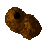
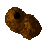

Tutorial
Page 5 of 9
Scrolling Islands
To enhance the feeling of motion we are going to add a few islands to the sea. An easy way would be to create a larger background image and add the island to this background, then simply tile and scroll that.
The disadvantage of this approach is that the islands will appear in a regular pattern, which the player will soon notice and get tired of (you might have seen this in cartoons where there is a repeating scrolling
background behind a running character).
To avoid this and try to keep things interesting for the player, we will choose a slightly more complicated approach and add the islands as instances into the room, each one at a random position. So first, create three
sprites with the following images from your "Scrolling Shooter Assets" folder:

 

NOTE: Can't remember how to add a sprite? It's the same process for all resources... right-click the resources folder, click "Add <resource>", select the resource from the file explorer and then
close the window to save it. Don't forget to give your resources meaningful names!
Name your sprites "spr_Island1", "spr_Island2", and "spr_Island3". As we will never use them for collision checking, it's best to ensure that Precise collision checking is unchecked in
the Sprite Properties window before you save them, as this will improve the speed the game runs, and the origin of the sprite needs to be at the default (0,0) position.
For each of the islands we will create an object, and then create instances of these objects in the actual room. In the Create Event of these objects we will give a vertical speed that is the same as the
scrolling speed of the background, and in this way it will look as if the islands are part of the background because they stay at the same position with respect to the scrolling sea.
Creating The Island Objects
Create a single new object right now, and call it "obj_Island1", and assign it the sprite "spr_Island1". We now need to add the movement for the island, so add a Create Event to the
object and in it add the "Vertical Speed" D'n'D action from the Move tab. Set the vert. speed value to 2 (the same as the room background speed) and then click "OK" to finish. The
instances of the island objects will now scroll down with the background, since they both move at 2 pixels per step.
To make sure that all other objects will appear "above" the islands we give the island objects a Depth of 10000. Instances of objects are drawn in the order of the depth, with the instances at the highest
depth being drawn first, and the instances with lowest depth being drawn on top of them. So by giving the islands a high depth they will always be drawn first and lie below the other objects in the game.
One more thing needs to be done. When the island disappears below the bottom of the room we want to make it reappear at the top. To do this, in the Step event of the island we will test whether the
island disappeared below the screen and, if so, let it reappear at the top. To do this we need the "y" position (height) of the instance in the room, and the variable y will return just that. This variable is
one of the built-in variables that all instances have (a value of 0 corresponds to the top of the room).
We will also need to use the variable room_height. This is a built in variable too, but is global in scope and returns the number of pixels high that the current room is. What we will do is check if the
the island disappears below the bottom of the room by comparing the island instance "y" value with the room_height, and if it is larger we will move it.
Loop The Islands
To start programming the islands, in "obj_Island1" add a Step Event. In this event we are going to the check and change position, so the first thing you need is the "Test Variable" action
we can use the action to test variable values to see whether the island lies below the room:
As you can see, as a value you can use another variable name, in this case the global variable "room_height", but you can use instance variables or even mathematical expressions here. So this
action will return true if the y position of the instance is greater than the room height. When true is returned, the next action below the test action is performed (or the next block of actions, but
more about this later).
So what action do we need now? To move to the top of the room we use the action "Jump to position", and as we want to jump to a random position along the x axis of the room and not the same x position,
we need to tell this action so by using a function.
The function we are going to use is random(). What is a function you might ask? A function computes a value (or performs an action) based on the value of certain arguments. The argument(s)
are written between the brackets after the function name, and functions are what you will mainly use when you start to use code instead of use D'n'D to create your games. Note for now though, that almost everywhere
where you can type in values you can also use functions and variables (and expressions involving these).
In the jump action we use random(room_width) as the x-coordinate. This will create a random value between 0 and the width of the room, so the jump action will look as follows:
We use –65 for the y-position to make sure the island starts completely outside the top of the room (remember that room coordinates start at (0,0) with a positive value moving down the room and a negative value
moving up the room), but since we set the vertical speed to +2, it will move into sight again.
Now, we need three island objects for our game, one for each sprite. however to save time, there is no need to create two new objects, as we can simply duplicate the object "obj_Island1",
creating a copy of this object which we can rename and assign a different sprite to while maintaining all the D'n'D that we have already added. To do this, right-click on the object and select the "duplicate"
option to copy this object as a new one. Name this new object "obj_Island2" and change its sprite, then do the same again to create "obj_Island3".
All that remains to be done is to place three islands at different heights in the room, so open up the room editor again and add one of each into the room at different height. We are now done with our scrolling
background, so give your game a quick test to see that all works as it should.
Even though the islands reappear at regular moments, because the position is different, the player will not really notice that they are the same. You could also have added some irregularity
in the moment the islands appear by also setting a (negative) random value for the y-coordinate.
© Copyright YoYo Games Ltd. 2015 All Rights Reserved